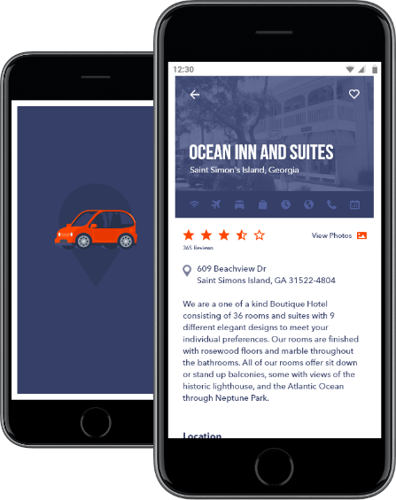

Jarvis
Where ya headed?
We'll get you sorted.
UX Research: Teddi Griego, Tim Schutz
UX Design: Tim Schutz

The Challenge
Create a tool that is lightning quick that can get you a breakdown of the hotels, fast food, restaurants and gas stations in your selected area without all the hassle of any hoops to jump through. A mobile app that does one thing and one thing well; get you where you need to go now.
Proto Persona
We made some assumptions here. Susan James is a fiction. Someone we created who we believe would be the ideal user for this app. For now, we're going to use her information to inform our decisions going forward.
Susan James

Behavioral Demographics
- 35 years old
- Nurse
- Single
- Loves Hiking
- Frugal
Pain Points
- Frustrated with the lack of resources to find accommodations quickly
- Hard to find vegan restaurants in new areas
- Frustrated by lack of rustic/non-chain hotels
- Wants to read reviews with little hassle
Goals and Needs
- Needs an easy way to locate accommodations
- Wants a no frills user experience while searching
- Needs a tool for road trips that is flexible no matter where she travels
Solutions
- Forum or website that has like-minded people
- Ability to look through food restriction restaurant reviews
- A way to quickly change the area of search
- A way to talk to locals for rustic accommodation
User Insight Statement
Susan James, who is a type A, busy professional, needs to be able to find accommodations when on a road trip without wasting her time in order to feel confident while travelling to unfamiliar vacation spots.
User Research Plan
Research Question:
How do you find accommodations such as hotels, restaurants and gas stations while on a road trip?
We wanted to find out:
What frustrations have people had while travelling on a road trip.
Discover what tools people use when looking for accommodations.
Understanding participants’ thought process while planning travel with others.
Survey/Interview
Below you'll find just some of the questions we asked and the answers we received from our participants.
Do you trust people's opinions or online reviews or do your own research?
"I do 50/50"
"Own research"
"I do both"
"I trust them to a certain extent, but if I end up not liking it then I will look into other options."
Do you plan ahead when traveling in a group?
"Yes"
"It depends on the destination and if we need to be coordinating activities and arrivals."
"Yes, but it's a little easier to wing it when you have other people to bounce ideas off of."
Do you go to the same places or different places?
"Both"
"Georgia and Florida multiple times. Many times though we travel in Minnesota and usually head up to Duluth and Two Harbors."
"Different places if I can help it, but some places are worth going back to again."